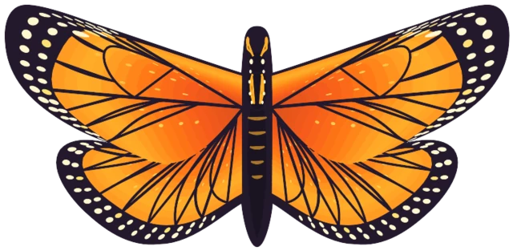

Вырезать и сложить
Бабочки
Выбери настоящую бабочку, раскрась крылья и следуй рисункам. В одной мастерской можно выбрать задние язычки или сложить корпус, за который удобно взяться при запуске.

Мастерская бумажных полётов
Бесплатная мастерская для детей 5–12 лет и взрослых. Для самолёта или кольцеплана хватит листа бумаги. Для бабочки или крылатки понадобятся распечатка, ножницы и скрепка. Можно начать без регистрации.
Выбрать модель
Коллекция
Выберите модель по материалам, которые есть под рукой. Каждую можно настроить в мастерской.
Вырезать и сложить
Выбери настоящую бабочку, раскрась крылья и следуй рисункам. В одной мастерской можно выбрать задние язычки или сложить корпус, за который удобно взяться при запуске.
Один лист на самолёт
Чистый лист складывай целиком. Если используешь стартовый PDF, сначала вырежи выкройку ножницами по толстой рамке.

Экспериментальные модели
Сверни лист в кольцо, отпусти бумажную крылатку или сложи планер с двумя парами крыльев. Какая модель закрутится при падении?

Бумажная мастерская для дома и класса
На странице 3 ты найдёшь свои модели и номера их страниц. На странице 4 отметь пять посадок, измени один сгиб и повтори ещё пять раз. Книгу можно бесплатно скачать для печати на A4 или US Letter.
Открыть книгу на странице 4 ↗Сравнить модели
Возьми две модели и сравни крылья, материалы и сгибы. Затем распечатай карточку и отметь первые касания пола.
Дома или в классе
Выберите место для посадки. Предскажите, куда прилетит планер. Запустите его мягко, измените что-то одно и повторите запуск с того же места.
Скачать семейное занятие ↗Испытай кольцеплан, крылатку или планер с двумя парами крыльев ↗
Попроси взрослого помочь с ножницами или тугим сгибом. Покажи, куда, по-твоему, прилетит планер.
Нарисуй свой прогноз и сравни две настройки. Что изменило место посадки?
Спросите, что может показать следующий полёт. Пусть ребёнок сам выберет, что изменить.
Открытая библиотека
Сначала напечатайте один экземпляр. Измерьте линейкой отрезок «50 мм». Если длина другая, выберите в настройках печати «Фактический размер» (100 %) и повторите проверку, прежде чем печатать для всего класса.
Выберите модель и формат бумаги для принтера.
У двух первых бумажных моделей K1 крылья прогибались, и бабочки плохо планировали. Прикрепи скрепку к своей бабочке и отметь место посадки.
Лаборатория мотора
Посмотри, как выглядит модуль с управлением со смартфона, изучи детали открытого варианта и распечатай макет, чтобы примерить его к бумажному самолёту.